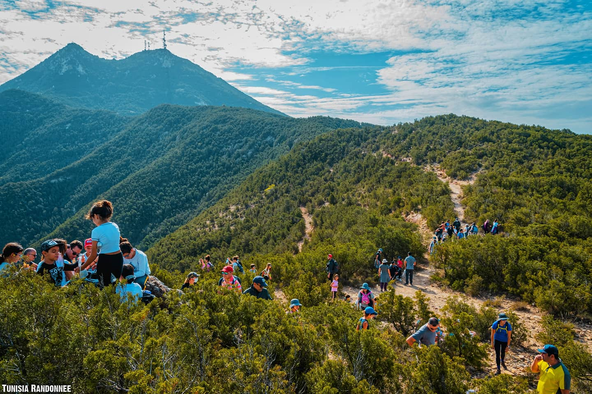
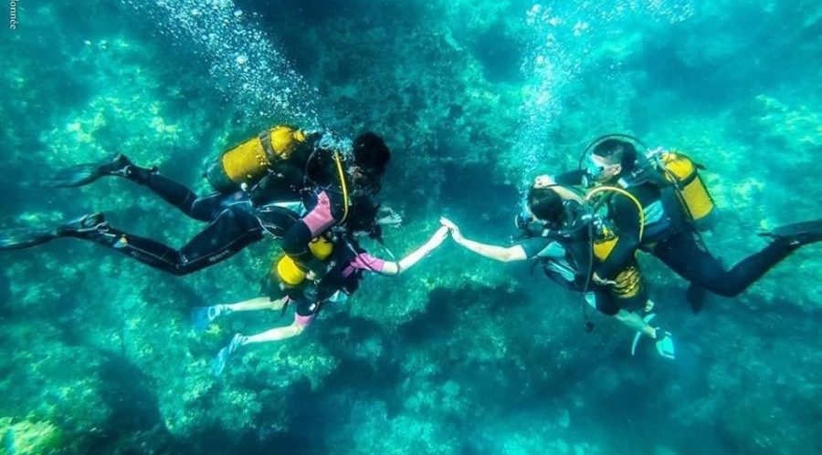
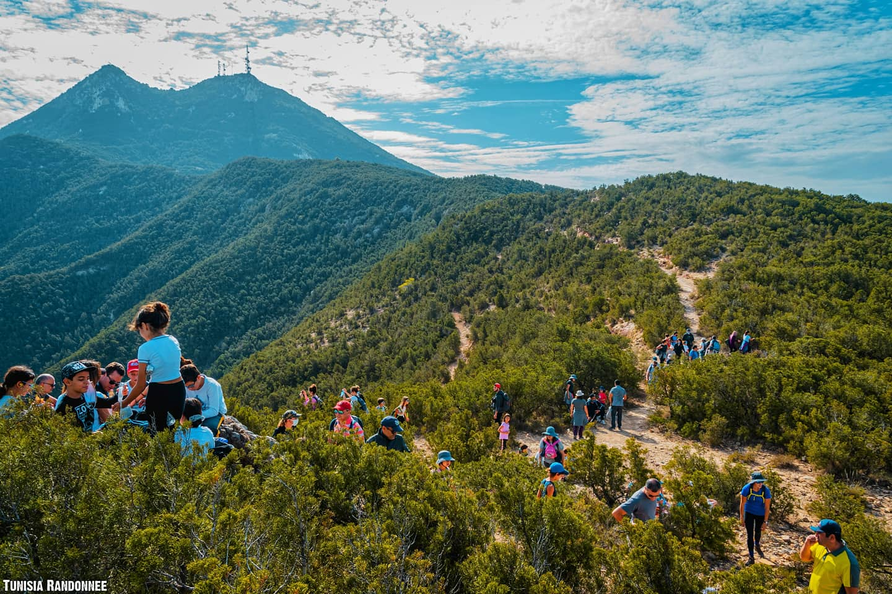
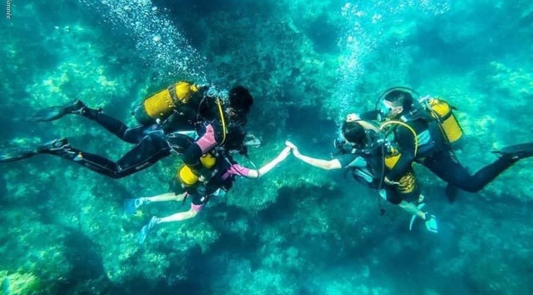

Tout proche de l’Europe, et pourtant si dépaysant, la Tunisie… De la Méditerranée au Grand Sud, des sables du désert aux neiges des montagnes, un haut lieu du trekking, de l’aventure, et de la découverte active !
 




Deux chaînes de montagnes (8 sommets de plus de 1 300 m et 13 de plus de 1 000 m) offre les spectacles parmi les plus sublimes et les plus colorés dont on puisse rêver. Au rythme de la randonnée, c’est un enchantement pour le regard, mêlant le vert tendre des terrasses irriguées, le rouge des pentes argileuses, le blond des champs d’orge, le tout sous un bleu d’azur.
Le Sud Tunisien possède toute la palette des reliefs sahariens : hamadas (plateaux) immenses, mers de sable (ergs) grandioses, dunes majestueuses, massifs escarpés, oueds parsemés de tamaris et oasis verdoyantes. Avec des guides Berbères et de Sahariens du cru (chameliers), la randonnée se déroule à un bon rythme, de crête en crête, de dune en dune, pendant que la caravane se faufile entre les reliefs pour rejoindre le point de campement, au milieu de nulle part, mais toujours caché au creux des plus belles dunes. C’est là, après avoir admiré le coucher de soleil depuis les plus hautes que vous vous sentirez si bien, loin de tout. C’est là, sous les étoiles, dans le grand silence saharien, quand les regards se font éloquents et que les souvenirs de la journée affluent, que l’on absorbe alors pleinement la magie du désert.
Rivages méditerranéens, à la rencontre des pêcheurs, ou Grand Sud Tunisien, transition unique entre les montagnes et le passage progressif au désert, c’est toute la palette des reliefs sahariens : canyons, regs, oasis, dunes, etc.
Dans les vertes palmeraies ou les villages en pisé isolés, aux traditions séculaires, les rencontres sont fréquentes avec les Berbères, si accueillants. Il est vrai que leur hospitalité légendaire, leur dévouement, en font des hommes très attachants. Parcourez ces terres sauvages, propices à la rencontre, aux côtés de ses hommes fiers, et partagez notre passion pour ce pays formidable dans une ambiance conviviale et chaleureuse. Venez découvrir un territoire, des produits locaux, des personnages hors du commun et bien plus encore ! Nous mettons à votre service notre savoir-faire afin de réaliser les circuits dont vous avez toujours rêvé!
"Chaque pas nous rapproche"
C'est prendre le temps d'observer, de comprendre, de sentir.
Mais c'est aussi et surtout échanger, rencontrer l'autre, partager, parfois se lier d'amitié.
Et, en fin de compte, se trouver soi-même.